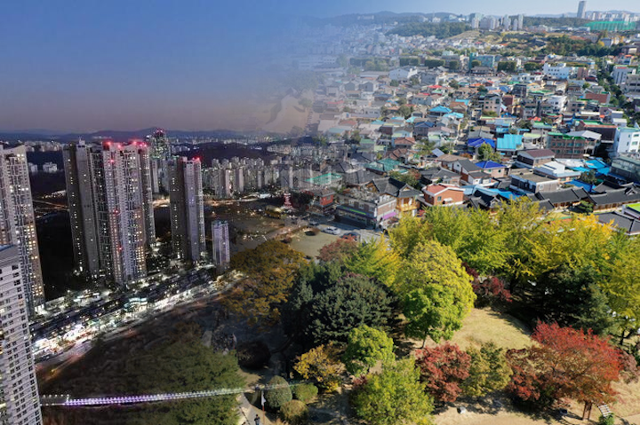
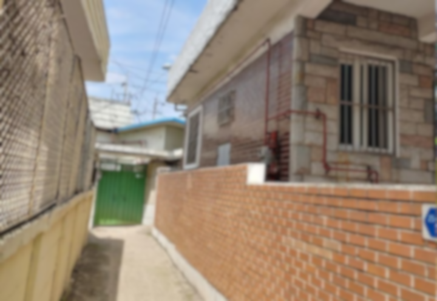

숫자가 먼저
진실을 말한다
수원시 노후주택 비율은 경기도 평균을 상회한다. 그러나 숫자 너머에는 단순한 집의 노후화가 아닌, 사람의 노후화가 함께 진행되고 있다.
경기도 평균 17.9%를 상회. 성남시(35.9%)에 이어 경기도 내 높은 수준이며 신도시 위주인 용인(5.8%)·화성(5.0%)과 대조된다.
(4개 구 중 최고)
고령인구 비율
거주 인구
수용 한도
수원시 저층주택의 약 88.6%가 20년 이상 된 노후 주택이다. 재개발·재건축이 아파트 위주로만 진행되어, 정작 정비가 가장 시급한 저층 빌라·단독주택 밀집 지역은 사업성 부족으로 소외되어 있다.
왜 이렇게
됐는가
수원화성 고도제한이 만든 규제의 연대기
노후 주택이 만드는
4가지 위협
낡은 집 안에서는 낡은 집만의 문제가 생기는 게 아니다. 그 집에 사는 사람의 건강과 안전, 그리고 도시 전체의 품격이 함께 낡아간다.
지도 위에서
사각지대는 명확해진다
노후도가 높은 동네, 취약계층이 많은 동네, 지원이 닿지 않는 동네. 이 셋이 겹치는 곳이 수원의 진짜 사각지대다. 붉은 경계선은 수원화성 역사문화환경보존지역이다.
붉게 칠해진 팔달구 원도심 — 지동, 행궁동, 매산동, 우만1동 일대가 모든 지표에서 가장 심각하다. 수원화성이 가장 아름답게 보존된 그 일대가, 사람들이 가장 낡은 집에서 살아가는 곳이기도 하다.

같은 수원,
다른 수원
4개 구 노후도 종합 지수 — 팔달구 197 vs 영통구 73
지원은 있다.
닿지 않을 뿐.
새빛하우스 집수리 지원사업은 존재한다. 그러나 수요자 신청 기반이다. 정보에 접근하기 어려운 고령 1인 가구에게 이 사업은 존재하지 않는 것과 같다.
"사업마다 기준과 조건이 존재하기 때문에 실제 도움이 필요한 주민 모두를 지원하기는 어렵습니다." — 수원도시재단 주거복지센터 담당자, 2026년 인터뷰
집수리만 해도 에너지 비용이 줄어든다. 지원을 받지 못하는 가구는 그만큼 더 많은 비용을 쓰고 있다.

이것은
개인의 문제가 아니다
노후 주택 거주자들을 한꺼번에 신축 아파트로 이주시킨다고 해결되지 않는다. 공실이 된 노후 주택은 새로운 문제로 직결된다.
수원화성 고도제한, 군공항 비행안전구역, 불규칙한 필지 구획—
이 문제는 처음부터 구조가 만들어낸 문제다.
구조가 만든 문제는 구조적 해결책이 필요하다.
수원도시재단 주거복지센터 담당자는
"단독·다세대주택 밀집지역에는 아파트 같은
관리사무소 체계가 없어 문제를 통합 관리할
컨트롤타워가 필요하다"고 밝혔다.
수원시 20년 이상 노후 저층주택의 88.6%— 수천 호가 여전히 지원 밖에 있다.